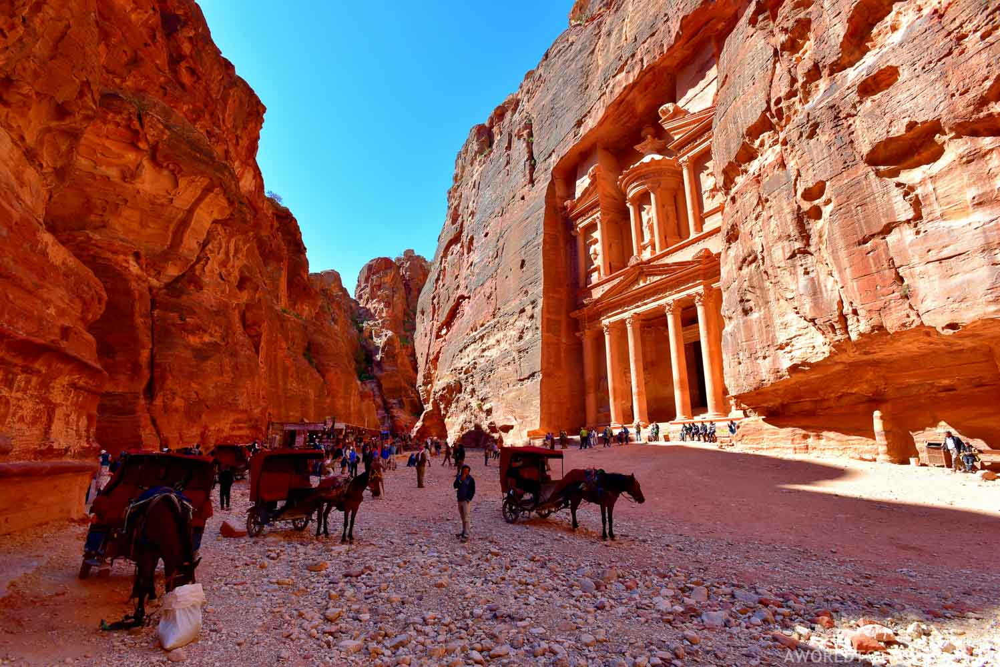
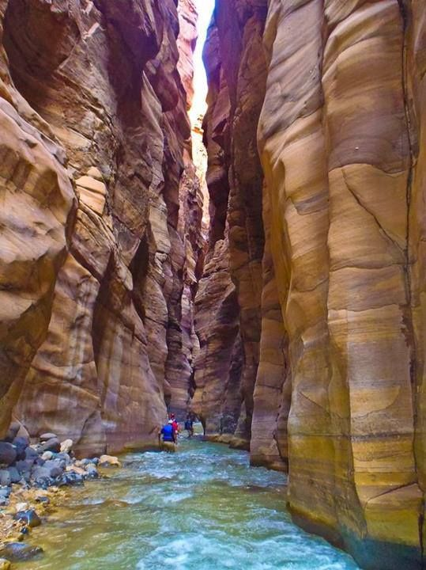

Jordan is an Arab Muslim country, located in the north of the Arabian Peninsula and in West Asia. Bordered by Syria to the north, Iraq to the east, Saudi Arabia to the south and south-east, and Palestine (the West Bank) to the west. Jordan is named to the Jordan River, which passes on its western border, and Amman is capital. The official language is Arabic, and English is the first foreign language.
The country's official currency is the Jordanian Dinar, which is equal to 1000 fils, or 100 piasters. It is available in the form of paper currency of 50 dinars, 20 dinars, ten dinars, five dinars and one dinars. Also available in the form of coins of half a dinar categories and quarter dinars and 100 fils and 50 fils and 25 fils and ten fils and five fils.
The culture of Jordan is based in Arabic and Islamic elements with significant Western influence. Jordan stands at the intersection of the three continents of the ancient world, lending it geographic and population diversity. Notable aspects of the culture include traditional music and clothing of Jordan, as well as an interest in sports. These include football and basketball as well as other imported sports, mainly from western Europe and the United States.
More than 60% of the population lives in the metropolis of Amman, concentrating the culture of Jordan in that city. Jordanian pop culture is heavily influenced by the "West". European and American music, movies, fashion and other forms of entertainment are popular among Jordan's people. Clubbing and partying culture are present in Amman, especially in the Western half of the city. A small minority of youth, mostly the rich in West Amman, exhibit counter-culture traits like face piercings and tattoos. Amman is consistently declared one of the most westernised and modern cities in the region. Malls, Western-brand stores, and hotels are important elements in Amman's urban life, especially in the Western side. English is widely understood and even spoken in lieu of Jordanian Levantine among Jordanians in the upper class. Westernization is occurring due to the heavy Western, especially British and American, influence on the nation's political life and foreign affairs. In addition, many people from western Europe and America have been moving to Amman and calling it their new home in the past few years. This increased trade links with the West and has reshaped the culture. Cuisine is shared with surrounding nations, especially Egypt, Syria and Turkey.
For such a small country, Jordan boasts a surprising variety of natural landscapes and urban attractions. A trip to Jordan takes visitors on a journey back to biblical times, when sites like the Dead Sea and the ancient yet astonishingly well-preserved city of Petra seemed to be at the heart of world events. Although covered in rocky deserts, Jordan boasts a good network of roads, which makes sightseeing by car an easy way to discover many of the country's top highlights. Begin your tour of Jordan in Amman, the largest urban center and a major political, cultural, and economic hub of this Middle Eastern kingdom. Jordan is in Middle East. When using our Jordan trip planner, you're building your holiday based on your own interests, visitor reviews, and the informed opinions of our well-traveled writers.
Day 1: Queen Alia International Airport + Petra
Day 2: Mujib Biosphere Reserve
Day 3: The Dead Sea and Queen Alia International Airport